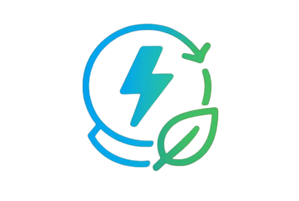
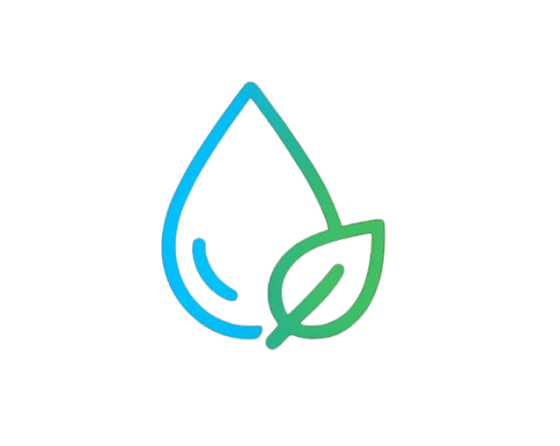
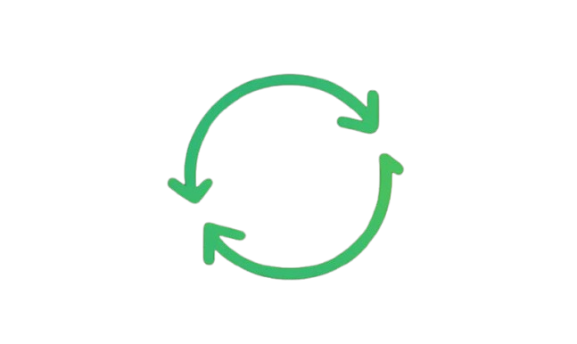

A EcoHidro combina tecnologia, natureza e eficiência para gerar energia renovável e promover o tratamento natural da água.

Produção limpa e sustentável.

Tratamento natural da água.

Água reaproveitada em diversas aplicações.
Contribuição para as ODS.
A água da chuva é captada e direcionada para um reservatório. Antes de movimentar a turbina da mini hidrelétrica, ela passa por um sistema de biofiltragem que remove impurezas e melhora sua qualidade. Após gerar energia, a água pode ser reutilizada para irrigação, limpeza ou devolvida ao ambiente.
Redução do desperdício e aproveitamento da água da chuva.
Geração de eletricidade renovável com baixo impacto ambiental.
Biofiltragem natural para remoção de impurezas.
Contribui para energia limpa, água potável e cidades sustentáveis.